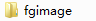
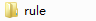

编辑标题画面
THE NVL Maker标题画面相关的脚本内容在title.ks里，
可以根据需要自行添加多个LOGO，插入开头视频，标题前的序言等等。
当然对熟悉吉里吉里/KAG的使用者，也可以完全使用自己制作的启动画面脚本来代替title.ks。
不过，除了这些特殊需求以外，大部分功能都可以直接使用标题编辑界面来完成。
标题编辑界面提供以下功能：
- 修改制作组LOGO（小组标志）
- 标题背景图片
- 标题背景音乐
- 添加粒子特效，例如下雪，萤火虫，樱花等
- 添加前景图片（在背景上再显示一张图片，例如游戏LOGO）
- 调整标题上显示按钮的功能、外观、位置
点下“界面设定”页的“系统样式”-“默认标题画面”按钮，可以打开标题编辑界面。
功能一览
接下来继续使用之前教程新建的工程Hello_World进行演示。
打开标题编辑界面以后，可以看到如下的窗口：
THE NVL Maker的所有界面编辑基本都长成这个样子，
忘记的时候，可以看下基础概念篇里的THE NVL Maker的标志含义与操作方法。
修改小组标志
所谓小组标志即是指标题画面显示之前，会先显示的游戏组LOGO。
如果还没自己小组标志的可以忽略这步继续往下（喂）。
首先点击如图“小组标志”右侧的方块。
点下之后将进入如下的图片选择界面。
首先要做的是选择素材所在的文件夹。
点击文件夹栏右侧的三角，可以打开文件夹选择列表。
THE NVL Maker的编辑器一共可以读取以下这些文件夹里的图片。
- 背景
 ——存放背景图片素材
——存放背景图片素材 - 前景——存放人物半身像（立绘、角色图）图片素材
- 遮片——存放切换效果规则图片（遮片）素材，具体请查看教程“层、页、画面切换”
- 头像
 ——存放头像图片素材
——存放头像图片素材 - 图片
 ——存放其他无法归类的图像类素材，NVL里主要用作存放粒子图片、默认模板素材等，即使用不到也请不要删除它们
——存放其他无法归类的图像类素材，NVL里主要用作存放粒子图片、默认模板素材等，即使用不到也请不要删除它们 - 其他
 ——存放其他无法归类的素材，NVL里主要用作存放界面相关素材
——存放其他无法归类的素材，NVL里主要用作存放界面相关素材 - 地图
 ——存放NVL地图、养成面板配置文件，当然也可以保存地图所用到的相关素材
——存放NVL地图、养成面板配置文件，当然也可以保存地图所用到的相关素材
对已经放进游戏文件夹的素材图，有可能会出现找不到（看不到缩略图）的情况，以下是几种可能性：
- 放入素材后，没有重载工程或关掉编辑器重新打开。
- 素材图片没有放在以上的文件夹内，而是放到了根目录或者音乐、视频相关文件夹下。
- 素材图片为.gjf等吉里吉里不支持的格式。
- 图片的命名中出现了不支持的符号，例如扩展名以外的“.”，导致THE NVL Maker无法正确读取。
这部分的详细说明，请参考上一篇教程“素材的导入”。
假如你没有遇到如上的问题，那么，在选择对应的缩略图，按下确认之后，就会返回到标题编辑画面了。
不过请注意，这时候，选择的图片只是被记录下来，还没有保存。
只有在点击标题编辑画面的确认，返回到编辑器主画面（可以点击测试游戏按钮）的时候，才会进行真正的保存。
虽然小组标志是不会显示在标题编辑画面上的，不过测试游戏时，已经可以看到效果了。
设置背景图片
接下来就将之前已经导入的标题画面相关素材，一点一点地加上去吧。
首先自然是标题画面的背景图，范例素材是ch_title_bgd.png。
不管你是将它存放在others或者bgimage文件夹下，现在应该能找到它的缩略图了。

点击确认，返回到标题编辑画面，应该已经可以看到下面这样的效果了。
设置背景音乐
然后是给这个标题添加合适的背景音乐烘托气氛。
别告诉我你找不到在哪设置……
这时候自然是点击“背景音乐”右侧的小方块进入音乐选择了。
在音乐列表中选中音乐，点击右侧的“单遍播放”或“循环播放”可以试听。
试听满意后点下“确认”，背景音乐就修改好了。
添加粒子特效
如果不满足于一动不动的标题画面，就来试试“画面特效”吧。
THE NVL Maker内建了一些效果，可以让画面变得更活泼。
例如说为了对应画面上的梅花，来个下雪什么的~
可惜这个在编辑器里也是看不出来的，需要实际测试一下才知道。
设置前景图片
虽然说将画面的前景和背景合成到一张图上直接显示，对静态标题是很常见的用法，不过总有些例外。
例如说希望做出层次效果，让前景能够挡住按钮的一部分。
或者单纯想让修改背景时不用动游戏的标题LOGO等，这时候就可以用到前景图片了。
默认的前景图片是一张空白的empty.png。假如之后不需要前景图了，可以设回这张图片。
范例里使用ch_title_name.png来作为前景图片。
具体操作步骤就请自己实验一下吧，设定完成之后应该是下图这样的效果。
设置标题按钮
接下来就是游戏标题上最重要的东西——各种功能按钮了。
THE NVL Maker提供了一些常用的功能，例如开始游戏，读取进度，系统设定，CG模式等等。
对于不使用的按钮，可以直接点它左边的白框，将勾去掉。
在这里我们就选择“开始游戏”、“读取进度”、“离开游戏”与“CG模式”作为范例。
改变按钮位置
在THE NVL Maker的界面编辑器里，改变按钮（或者其他控件的位置），通常有两种方式。
这里先演示最简单的一种，那就是……拖。
除了用鼠标拖动以外，按下键盘方向键，可以每次移动1个像素。
按下Shift+方向键，可以每次移动10个像素。
总之先随便试着把按钮从原来的竖排改成横排。
每当选中一个按钮，右侧的“当前坐标”就会显示出这个按钮的位置。
假如你已经在PS之类的作图软件里，将按钮排好版，有了明确的坐标，也可以按接下来说的方式，直接填写具体坐标。
填写具体坐标/更换按钮图片
点击特定按钮，例如“开始游戏”右侧的方块，就会进入按钮的详细设置。
详细设置包括以下三部分，具体坐标，按钮的图片，以及按钮选中和点下时的音效。
所有的按钮都包括三个状态的图片“一般”“选中”“按下”。
指的是按钮通常情况下显示的图片，鼠标移动上去时显示的图片，以及鼠标点下按钮时显示的图片。
设置这些图片的方式，和设置背景图等等一样，都是继续点击对应的方块，打开图片选择窗口。
不同的是你也可以直接在输入框里填写具体的图片名。
此外，点击方块右侧的圆形，可以复制上一个输入框的内容。
例如说，范例里“开始游戏”按钮的选中和点下状态，用的是同一张图片ch_title_button_over_04.png，
那么就可以先指定“选中”状态的图片，之后点击“按下”输入框右侧的圆形，复制“选中”输入框的内容。
以“开始游戏”作为例子的话，具体的参数是这样的。

保存并测试
将四个按钮的图片和坐标都填好，调整完毕之后，就可以测试了。
测试之前，请千万记得点下“确认”进行保存，如果按右键或者点取消的话，所有的修改就都白费了。
最后是实际的游戏测试画面截图，和你设想的是不是一样呢？